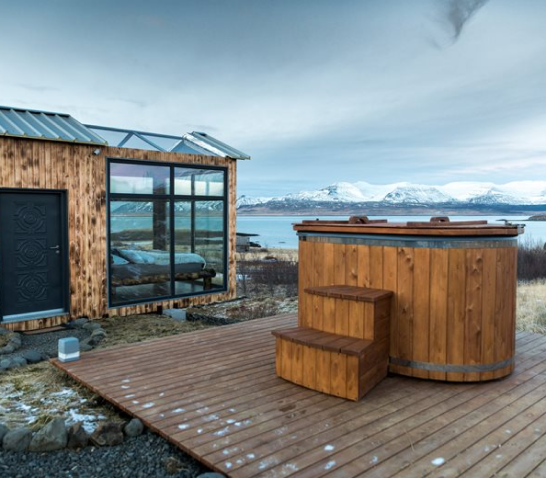

The Outside
Hot tubeElectric car change
Løvtag’s three exclusive and comfortable cabins, Et, Ro and
Ly, are designed by architect Sigurd Larsen. They all have an
open space with a double bed, a double sofa bed, kitchen,
separate toilet and an outdoor shower. On the roof,
surrounded by treetops, there is a terrace, which is about
nine meters above ground.
The Inside
SpaceKitchenBathroom
Løvtag’s three exclusive and comfortable cabins, Et, Ro and
Ly, are designed by architect Sigurd Larsen. They all have an
open space with a double bed, a double sofa bed, kitchen,
separate toilet and an outdoor shower. On the roof,
surrounded by treetops, there is a terrace, which is about
nine meters above ground. The cottages are built around
tall, old trees that go through the entire cottage from floor
to ceiling.
Practicalities
BreakfactClassic Dinner
Løvtag’s three exclusive and comfortable cabins, Et, Ro and
Ly, are designed by architect Sigurd Larsen. They all have an
open space with a double bed, a double sofa bed, kitchen,
separate toilet and an outdoor shower. On the roof,
surrounded by treetops, there is a terrace, which is about
nine meters above ground.